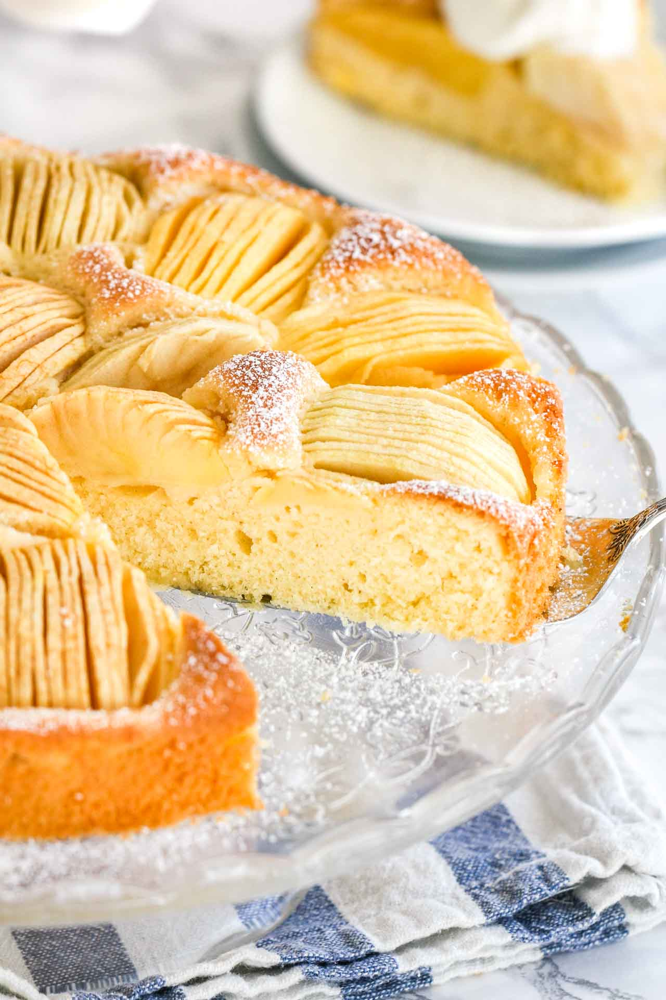

Ingredients

Recipe
- 5 large egg yolks
- 2 medium tart apples, peeled, cored and halved
- 1 cup plus 2 tablespoons unsalted butter, softened
- 1-1/4 cups sugar
- 2 cups all-purpose flour
- 2 teaspoons cream of tartar
- 1 teaspoon baking powder
- 1/2 teaspoon salt
- 1/4 cup 2% milk
- Confectioners' sugar
Directions
- Preheat oven to 350°. Let egg yolks stand at room temperature for 30 minutes. Starting 1/2 in. from 1 end, cut apple halves lengthwise into 1/4-in. slices, leaving them attached at the top so they fan out slightly. Set aside.
- Cream butter and sugar until light and fluffy, 5-7 minutes. Add egg yolks, 1 at a time, beating well after each addition. In another bowl, sift flour, cornstarch, cream of tartar, baking powder and salt twice. Gradually beat into creamed mixture. Add milk; mix well (batter will be thick).
- Spread batter into a greased 9-in. springform pan wrapped in a sheet of heavy-duty foil. Gently press apples, round side up, into batter. Bake until a toothpick inserted in the center comes out with moist crumbs, 45-55 minutes. Cool on a wire rack 10 minutes. Loosen sides from pan with a knife; remove foil. Cool 1 hour longer. Remove rim from pan. Dust with confectioners' sugar.